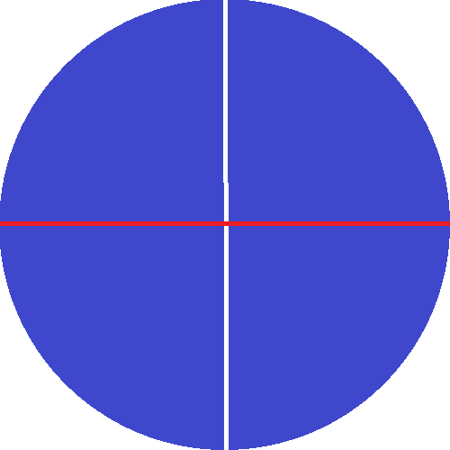
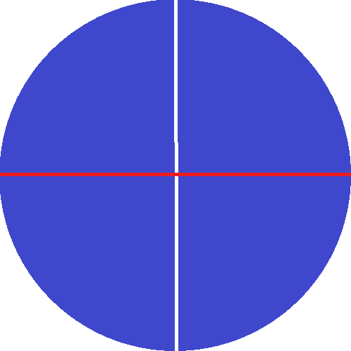

Ping is a fun activity enjoyed worldwide, however it has many problems.
Ok ok so the problem that have is that uhh... Well like you hit the ball right, but also you have to hit it to a specific place and that is difficult, but a lot of the time the margin of a really good hit and a really bad hit (i.e. it goes out or hit the edge of the table) is really small. So it's like as you get better you still hit it out the same percentage of times because though your hits are more accurate, you aim closer and closer to the edge. So as you practice it is difficult for you to grok how much better you are getter at the game which is unfortunate because seeing you work paid off feels really good.

Another problem is that um... The game is played around a rigid table with pretty shape corners. Making it easy to injury yourself by hitting the table as you move around it. This is made worse by the fact that you can underhit the ball so it bounces just after the net on the other side. This forces the opponent to quickly bend over the table to hit the ball before it bounces a second time. There are many sports which have a danger of injury involved, however these risks are usually something fundamental to the game, you can't have football without tackles, but there is no good reason why a ping pong table must be rectangular, it would work just as well if not better on a circular table.
 

So to fix these problems, I have created the Pie Pong Table (trademark Jason Ecola) You don't bump you corners because there are no corners and you dont have to spend as much time worrying about hitting the edges because the edges are all equidistant from the center. With these upgrades, pie pong will probably become the most played sport ever.